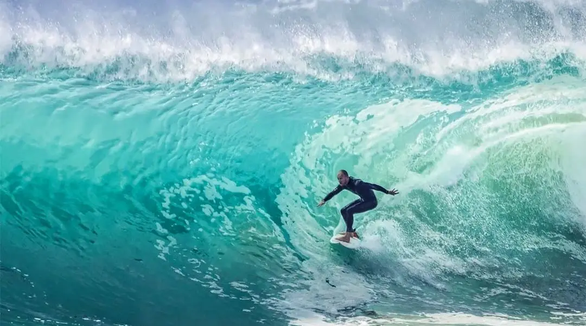
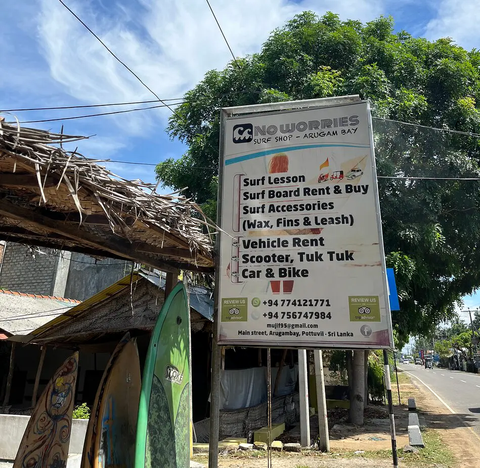
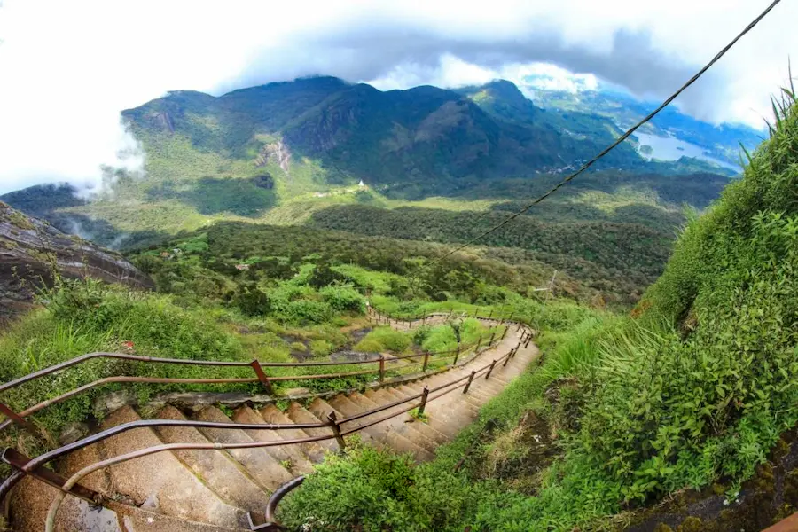
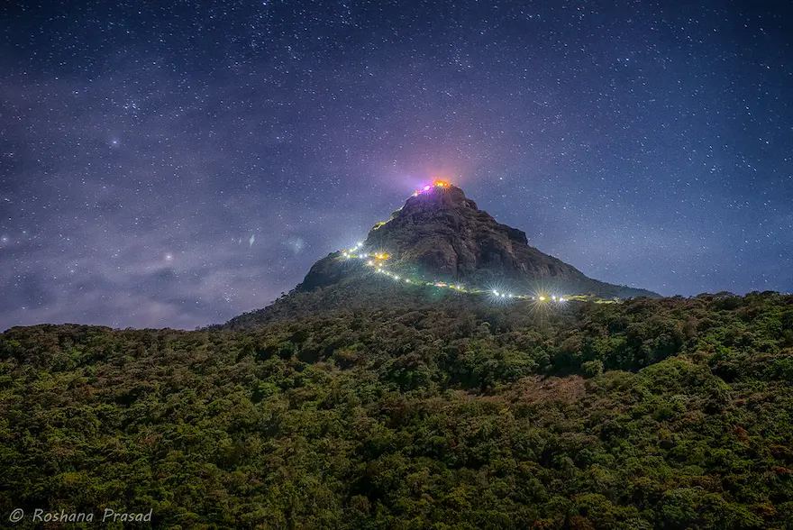
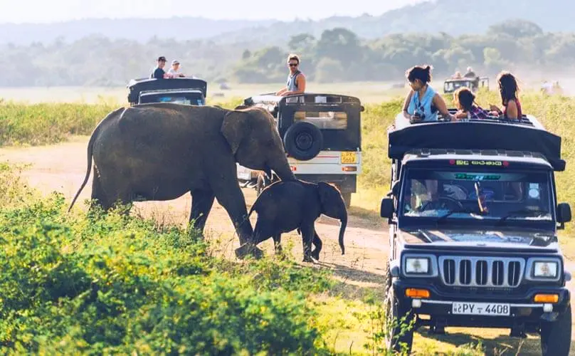
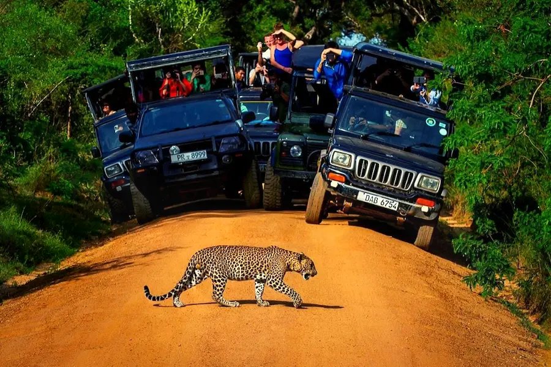

SURFING
Sri Lanka is considered as one of the best destinations in the world for surfing because the 'Arugambay Beach' is known to be one of the best spots in the world for surfing, in addition there are more options for instance Weligama Beach, where surfing is suitable for beginners. June - August is the best time to go surfing at Arugambay Beach since the swell is more consistent and with a pleasant climate.
 There are plenty of surf schools around the coast if you want to learn surfing or you can also rent a surfboard from any of the surf shops around the coast. Generally, renting a surfboard would cost around 1000 LKR - 3000 LKR. At the Arugambay main point, surfing is recommended for average to advanced surfers. There is another popular break at Pottuvil point which is perfect for all surfers. In addition, you can hire a surf guide or talk to the locals in the area to get to the surf break points in Arugambay. You can also check this surfing guide out before surfing at Arugambay Beach.
HIKING
You can visit the Sinharaja Forest or Knuckles Conservation Forest for hiking if you are a wildlife lover where you can enjoy birdwatching and numerous species while hiking or else you can visit the Adam's Peak which is more of a cultural site. You have 5,000 to 6,000 steps to climb and on the summit, the locals believe that the footprint of Buddha was left. Moreover, the pristine view from the top is stunning!
 It takes around 2 - 4 hours to climb the mountain and you could come down within just 1 - 2 hours. Climb Adam's Peak aiming for the sunset or sunrise to get stunned visually from the peak. There is no entrance fee or cost incurred during this activity, just make sure to bring a backpack with all the necessities. Here is a guide to climb the Adam's Peak.
WILDLIFE SAFARI
Go on a wild safari ride at Yala National Park, the best in the country and you will have the chance to have a close look of the rarest species on earth! This will be a dream ride for wildlife lovers and photographers.
Yala Safari Ride has two sessions, either you can go in the morning at 6AM or in the afternoon at 2PM. The safari tour takes around 4 hours. You are lucky if you spot any leopards! The entrance fee to Yala National Park and safari fee would cost you 40 - 80 USD. You can conveniently book your safari tour at Yala National Park online here.
 WHALE WATCHING
“Sri Lanka ranks in the top two or three countries in the world at whale watching”, you will be able to see blue, sperm and humpback whales as they migrate across the coasts of Sri Lanka. You can go to Mirissa Beach where you can easily spot a whale from the coast or go on a whale watching ride with a crew.
During November to April there is a high chance of spotting whales and also the oceans are calm to have a pleasant tour. The average duration of whale watching is 4 hours.Average cost of Whale Watching at Mirissa is approximately around 30 - 60 USD. You also have the option to book a private boat for around 450 USD. For more info visit: www.whalewatching.navy.lk